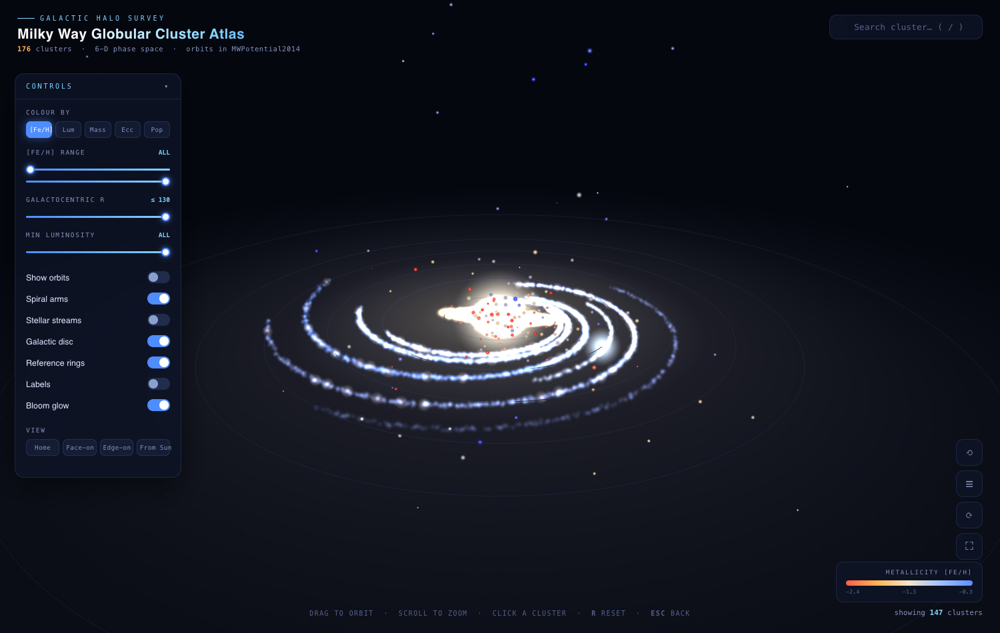
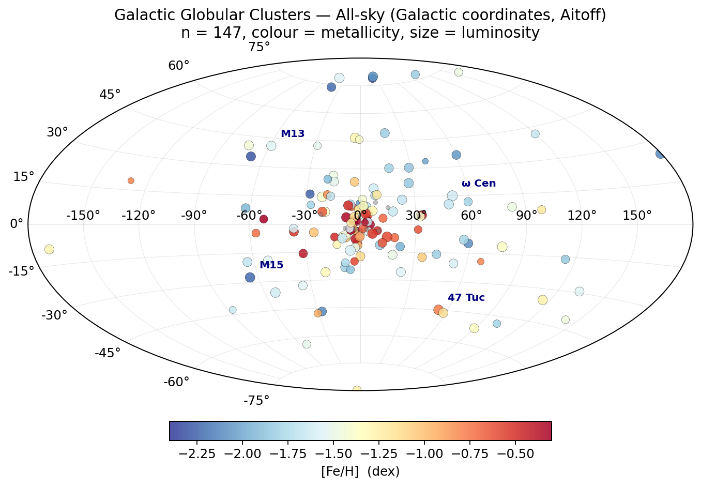
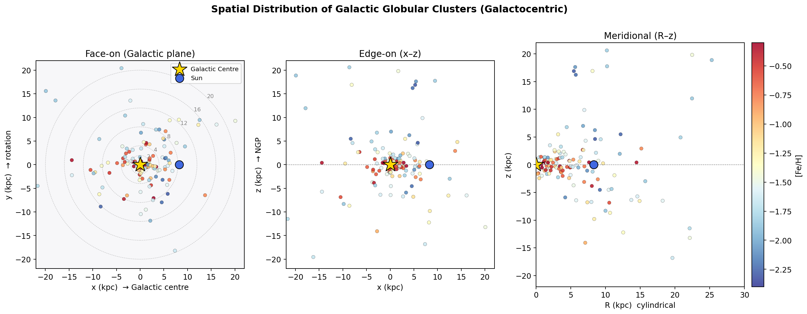
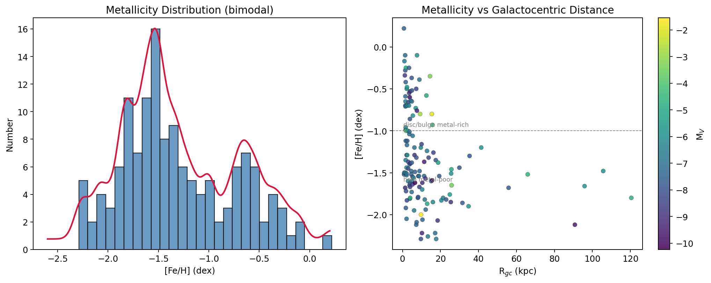
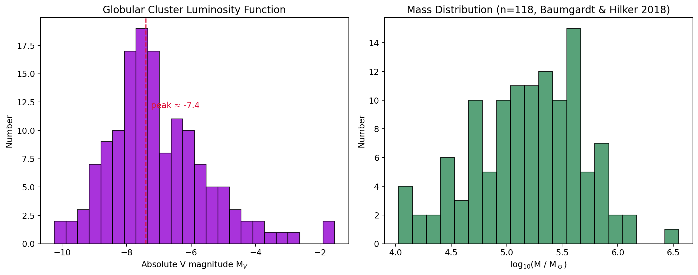
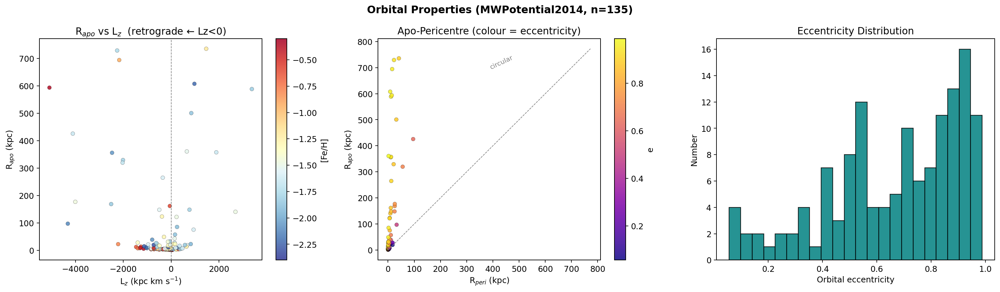
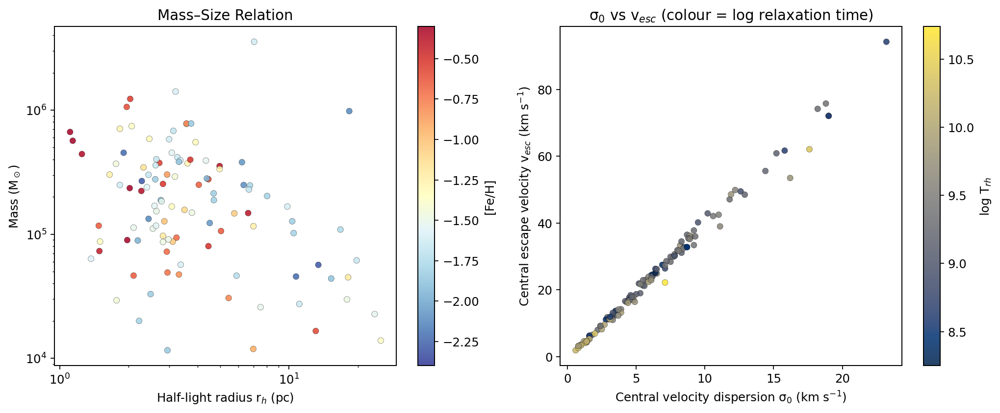
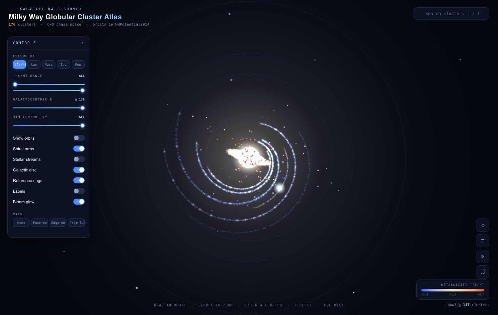
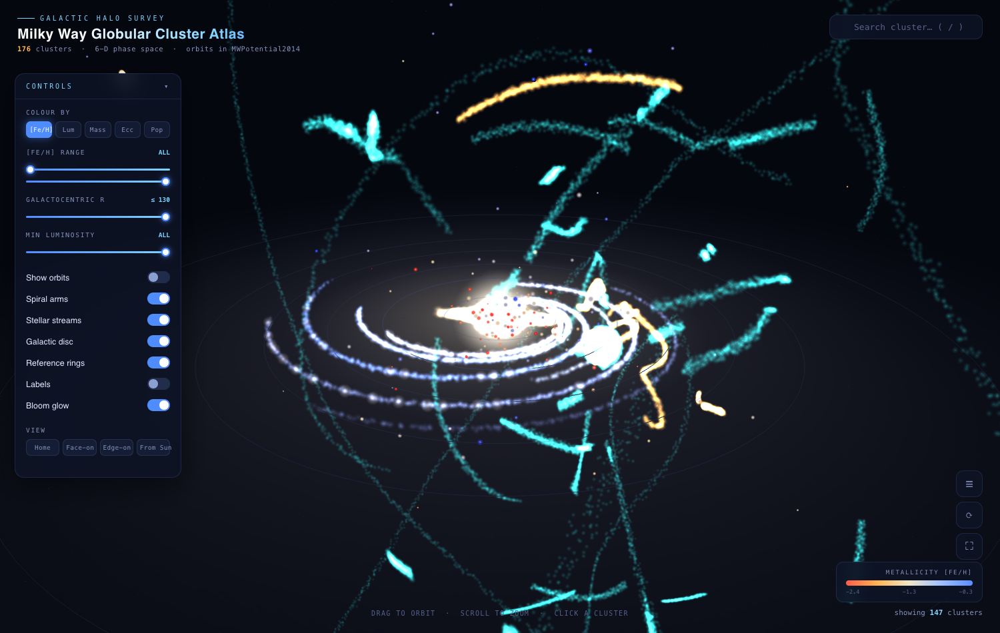
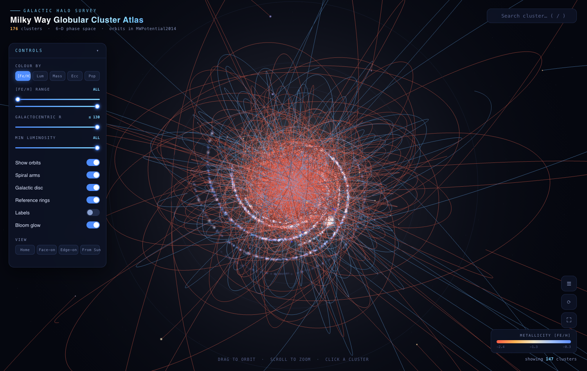

×
An interactive atlas of Galactic globular clusters — multi-survey catalog, orbit integration, stellar streams, and a scientific spiral-arm & bar model, in a zero-install 3D web explorer.

176 Milky Way globular clusters, cross-identified and merged from four authoritative catalogs. Names are normalized (Messier/common aliases → Harris primary key) and matched by coordinates (3″ tolerance); multi-source fields are fused by precision priority. 135 clusters have full 6-D phase space (position + proper motion + radial velocity).
| Field coverage | Count |
|---|---|
| Distance | 170 |
| Proper motion (Gaia EDR3) | 170 |
| Mass | 118 |
| Metallicity [Fe/H] | 139 |
| Radial velocity | 141 |
| Full 6-D phase space | 135 |
| Spot-check clusters | Distance | [Fe/H] | ecc |
|---|---|---|---|
| 47 Tuc (NGC 104) | 4.41 kpc | −0.76 | 0.12 |
| ω Cen (NGC 5139) | 5.20 kpc | −1.62 | 0.69 |
| M13 (NGC 6205) | 6.60 kpc | −1.54 | 0.81 |
Every catalog was verified against its official CDS VizieR identifier and is cited with its original reference. Click any card to open the source. Data remain the property of their respective authors/institutions and are redistributed here for research and educational use.
| Check | Result | Status |
|---|---|---|
| Row counts vs VizieR | 147 / 170 / 112 / 10978 | ✓ match |
| Coordinate consistency (Harris vs Gaia EDR3) | median offset 0.048′ (≈3″) | ✓ reliable |
| Circular velocity at the Sun | 238.0 km/s | ✓ MWPotential2014 |
| 47 Tuc Galactic coordinates | l=305.89°, b=−44.89° | ✓ lit. 305.90, −44.89 |
| Orbit start vs catalog position | offset ≈ 0.02 kpc | ✓ same frame |
| Online 3D app (headless test) | 176 clusters / 124 streams / 0 JS errors / 120 fps | ✓ pass |









# Clone the repo git clone git@github.com:jianxing-chen/globular-cluster-atlas.git cd globular-cluster-atlas # Open the 3D app (zero install) open viz/index.html # macOS # start viz\index.html # Windows # xdg-open viz/index.html# Linux
# Re-run the data pipeline (optional) cd scripts python3 download_catalogs.py # 1 fetch from VizieR python3 parse_and_validate.py # 2 parse + validate python3 build_master.py # 3 merge master catalog python3 integrate_orbits.py # 4 orbit integration python3 process_streams.py # 5 stellar streams python3 make_figures.py # 6 static figures python3 export_viz_data.py # 7 bundle web data